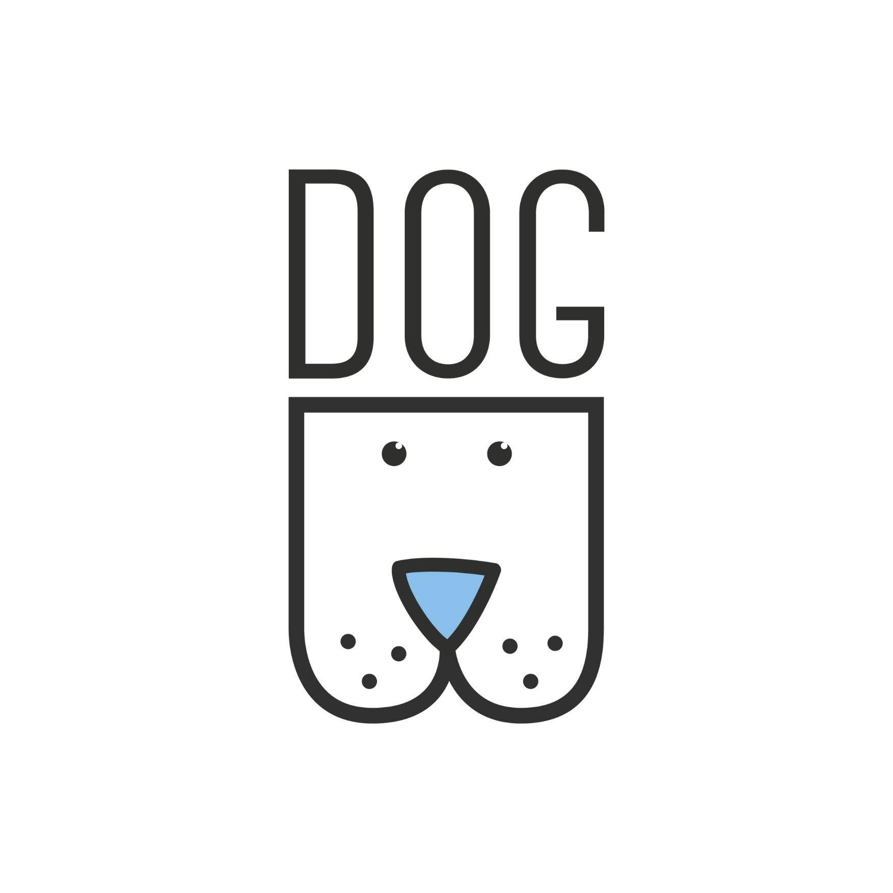

ძაღლების ორგანიზაცია საქართველო

ჩვენი მისია და D.O.G.-ის დაარსების ისტორია
ადგილობრივებისთვისაც და ტურისტებისთვისაც, უსახლკარო ძაღლების ხილვა ნაცნობი სიტუაციაა. მხოლოდ თბილისში, ძაღლების კონტროლის სხვადასხვა პროგრამის გამოცხადების მიუხედავად, დადგენილია, რომ ათიათასობით ძაღლი ქალაქის პარკებსა და ქუჩებში თავს იცავს და იბრძვის გადარჩენისთვის.
D.O.G. ცდილობს, მაქსიმალურად ბევრ ძაღლს გაუწიოს დახმარება, მაგრამ, ვინაიდან თავშესაფარში მხოლოდ 35 ძაღლისთვისაა ადგილი, ხოლო თბილისში ძაღლთა რიცხვი 43 000-ს აღწევს, თავშესაფრის საქმიანობა საკმარისი არ არის. ჩვენი მიზანია, ძაღლები და ლეკვები დროებით გვყავდეს თავშესაფარში და ხალხმა აიყვანოს ისინი. შესაბამისად, ასეთ შემთხვევაში, ჩვენ უფრო მეტი ძაღლის შეფარების საშუალება გვექნება. ცხოველების თავშესაფრითა და ახალი ოჯახებით უზრუნველყოფის პარალელურად, ჩვენი ორგანიზაცია ახორციელებს სტერილიზაციის პროგრამას, რომელსაც ლონდონში მდებარე ცხოველთა კეთილდღეობის ორგანიზაცია, Mayhew International-ი აფინანსებს. მართალია, არ შეგვიძლია ყველა ძაღლის თავშესაფარში მიღება, მაგრამ ყოველთვის ვთავაზობთ დახმარებას ადამიანებს, რომლებიც გვთხოვენ, მივიღოთ ძაღლი ან ლეკვი და მათ სტერილიზაციას და ვაქცინაციას ვთავაზობთ, რასაც ჩვენი ,,დაბირკვის“, ვაქცინაციის, სტერილიზაცია-კასტრაციისა და უწინდელ ადგილზე დაბრუნების პროგრამა ითვალისწინებს. 2015 წლის იანვრიდან დღემდე, ორგანიზაციამ უკვე 230 ძაღლსა და ლეკვს გაუწია ამგვარი მომსახურება.
2008 წელს საქართველოში ჩამოსული ჰოლანდიელი ბიზნესმენი ივო ბახუიზენი გაოგნებული იყო დედაქალაქის ქუჩებში უპატრონო ცხოველების სიმრავლით. "საქართველოს ძაღლების ორგანიზაცია“ სწორედ მის მიერ დაარსდა მას შემდეგ, რაც ის შემაშფოთებელი ინციდენტის შემსწრე გახდა მოულოდნელად.
საქველმოქმედო ფონდი უსახლკარო ცხოველებისთვის თავშესაფრითა და საკვებით მომარაგებას უზრუნველყოფდა. მათი მისია, როგორც ვახსენეთ, იყო და არის უპატრონო ძაღლების რაოდენობის შემცირება, მათთვის პატრონების მოძებნა, დაბინავება და ზოგადად, ცხოველების კეთილდღეობაზე ზრუნვაა. ფინანსების მოზიდვასა და თავშესაფრისთვის შესაფერისი ტერიტორიის პოვნას ორი წელი დასჭირდა. ამ და სხვა დაბრკოლებათა გადალახვის შემდგომ კი თავშესაფარი 2011 წლის გაზაფხულზე გაიხსნა.

ეწვიეთ ჩვენს Facebook გვერდს და თვალი ადევნეთ ჩვენს ყოველდღიურ აქტივობებს
დაბრუნდით ჩვენს ოფიციალურ გვერდზე